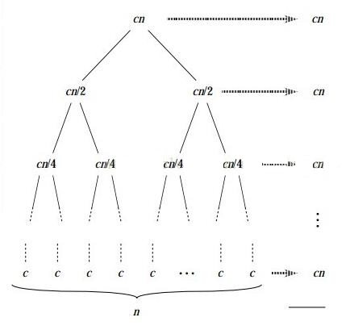
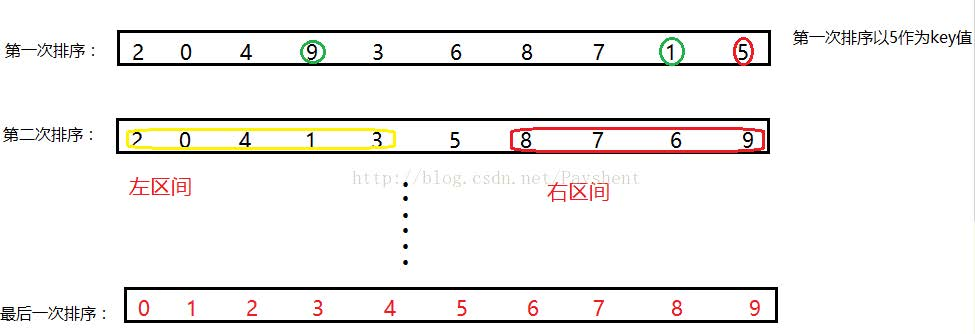
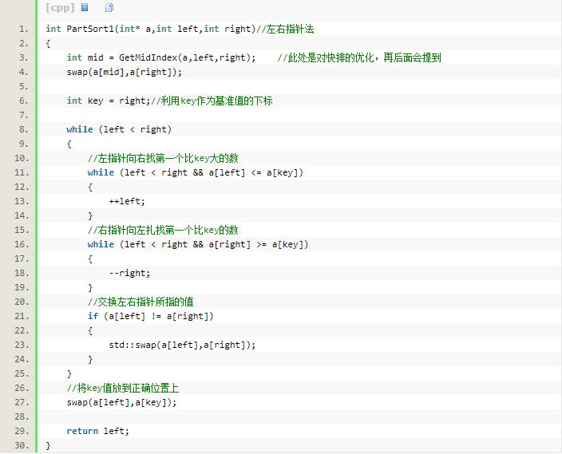
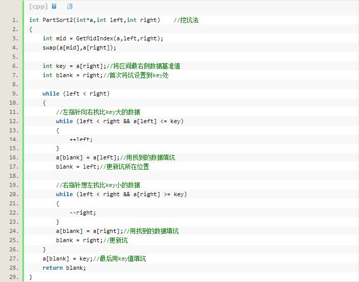
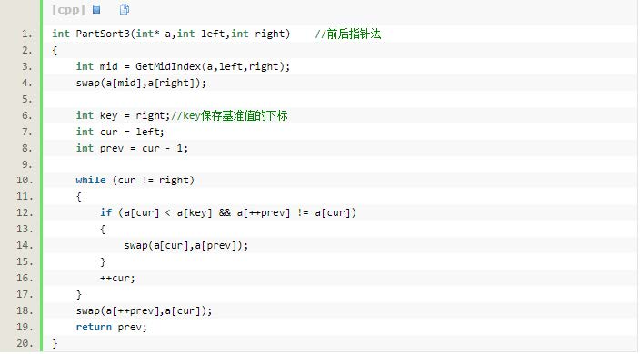
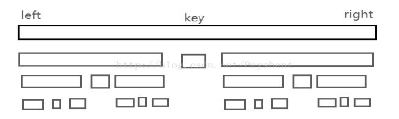
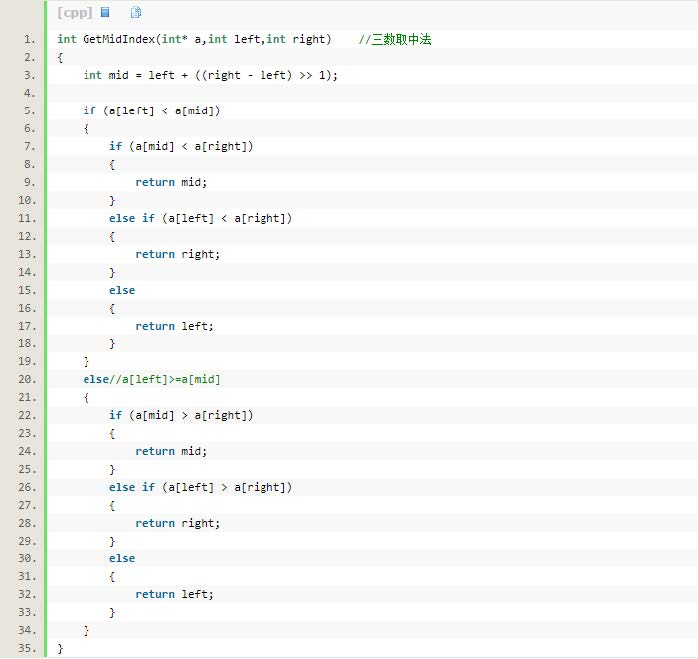
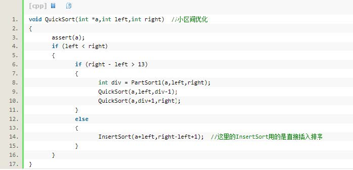
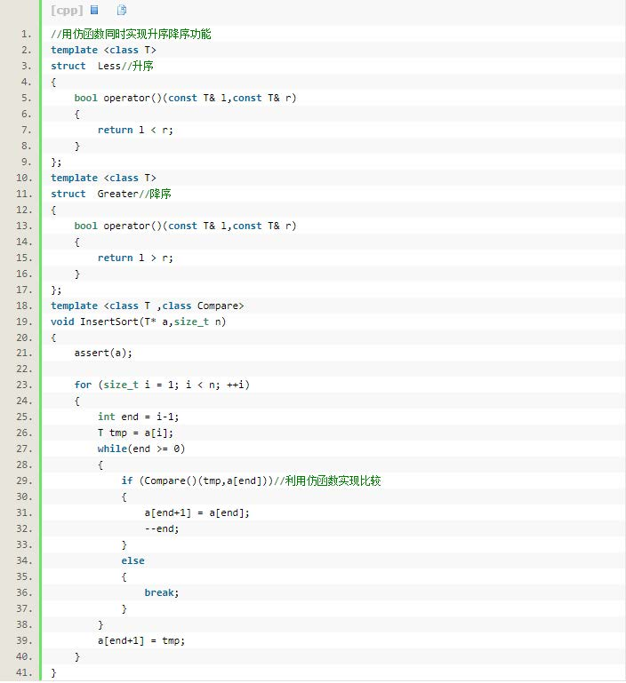
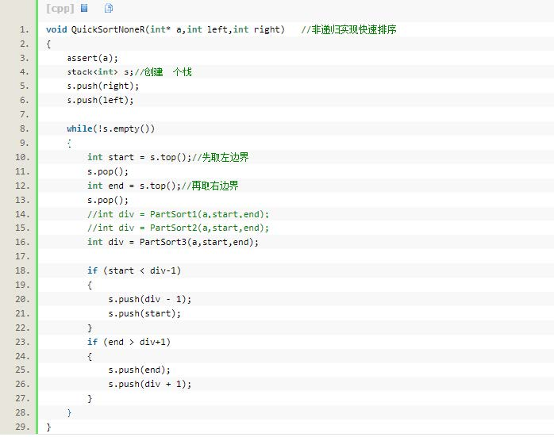

快速排序算法
一、快速排序的思想
快速排序是生活中比较常用的一种排序算法，它的特点就像名字一样速度快、效率高。
快速排序采用的思想是分治思想，先简单的介绍一下分治的思想。分治算法的基本思想是将一个规模为 N的问题分解为 K 个规模较小的子问题，这些子问题相互独立且与原问题性质相同。
求出子问题的解，就可以得到原问题的解。下面这张图会说明分治算法是如何进行的：将 cn 分成了两个 cn/2，转而分成了 cn/4 cn/8……我们通过这样一层一层的求解小规模的子问题，将其合并之后就能求出原问题的解。

既然快速排序用到了分治思想，那么也就是说快速排序也就和分治算法一样为了进行排序需要先对其划分的子区间进行排序。
其基本思想就是：在待排序的序列中选取一个值作为一个基准值，按照这个基准值得大小将这个序列划分成两个子序列，基准值会在这两个子序列的中间，一边是比基准小的，另一边就是比基准大的。这样快速排序第一次排完，我们选取的这个基准值就会出现在它该出现的位置上。
这就是快速排序的单趟算法，也就是完成了一次快速排序。然后再对这两个子序列按照同样的方法进行排序，直到只剩下一个元素或者没有元素 的时候就停止，这时候所有的元素都出现在了该出现的位置上。
二、快速排序的单趟算法
目前关于快速排序的单趟算法，我所熟知的只有这三种方法：左右指针法、挖坑法、前后指针法。
1、左右指针法：
左右指针法实现思路：在一段区间内我们有一个值 key，从左边区间进行遍历，直到找到一个大于 key 的值就停下，然后再从右边找小于 key 的值，找到一个也停下来。我们将左右的值进行交换，这样左边那个大于 key 的值就被换到了右边，而右边那个比 key 小的值就被换到了左边。
当左右两个指针相遇的时候就说明所有元素都与 key 做过了比较。然后再将左指针所在的元素赋值给 key。此时按照上述方法进行递归实现 [left, key]和 [key+1, right]。

这个图对于单趟排序做了一个简单的说明
左右指针法代码如下：

2、挖坑法：
挖坑法的思想是类似于左右指针法的，思路是先将最右边的值保存下来，作为 key 值。
这时候最右边的值被取出去，最右边就相当于有了一个坑，我们从左向右进行遍历，找到一个比 key 大的数就把它填到这个坑里，这时候就相当于坑在左边，我们有从右向左进行遍历找比 key 小的数，找到后再次填到坑里。依次类推，大致的思想和上面的解法其实是很相似的。
挖坑法的代码如下：

3、前后指针法：
前后指针法的思路就是有两个指针，一个为 cur，另一个为 prev。开始的时候让 cur 指向 left，让 prev 指向 left 的前一个位置。让 cur 向后找比 key 小的值，找到之后就让如果此时 prev 与 cur 不相等就让 prev 与 cur 进行交换。
如果找不到比 key 小的值就一直让 cur 向后走，直到走到区间的最右边就停止，当 cur 走到边界的时候就让 cur 与 prev 进行交换。不断缩小边界，相同的方法进行遍历子区间。
前后指针法的代码：

三、快速排序的时间复杂度及其优化
通过上面讲解快速排序的单趟算法我们可以知道，快速排序是将一个问题转化为求解小区间来进行解决。
如果每次我们选的那个 key值刚好是整个区间序列的中间的那个位置，那么它分成的来那个过子区间就会相差不大，这时候我们我们可以把快速排序看成一颗二叉树。图如下：

我们可以看到如果选的 key 值的正确位置刚好在这个序列的中间，那么此时可以看成一个二叉树。
这个时候快速排序的时间复杂度是 O(n*lg n)。但是，如果这个 key值得正确位置是在这个区间的最边上，就是说我们选择的这个 key是最大值或者最小值，那么就会产生的一个子区间就是空的，这时候快速排序的时间复杂度就会达到 O(n*n)。
所以，我们需要的是时间复杂度小的快速排序，为此我们就要让快速排序选择的那个 key值都能恰好处在这个序列的中间。于是，我们以此思想来进行优化快速排序。
优化1 ：三数取中法
三数取中法就是我们取三个数中间的那个数，这样我们就能在给定的一段区间中找到那个每次出现在中间的那个数。代码如下：

优化2 ：小区间优化
当我们划分的子区间很小的时候（一般情况下13为判断的标准），我们使用快速排序对于这些小区间进行排序的时候，如果我们还使用快速排序的话就会得不偿失。
因为快速排序对子区间的划分就像二叉树一样，越到下面递归越深，那么还不如我们把这剩下的数取出来用其他的排序，这样的话也就提高快速排序的效率。具体代码如下：

在这里我给出直接插入排序的代码实现，大家可以看一下。关于直接插入排序我会在以后的博客中会讲的

四、关于快速排序的非递归实现
上面的快速排序使用递归来实现的，我们知道如果递归特别深的情况下就会不断的去创建函数的栈帧，增加了函数调用的开销就会影响函数的执行效率，那么这时采用非递归的快速排序就是非常有必要的。其实说到非递归，就非常简单了，直接使用前面学过的栈来进行实现。
非递归代码如下：

上面就是我关于快速排序的介绍，包括快速排序单趟的算法以及它的优化方法。
在快速排序中我们知道它的时间复杂度在 O(lgn）~O(n*n)，在经过我们的优化方法改善之后它的时间复杂度是接近 O(lgn) 的，相对于其他排序来说快速排序时间复杂度还是低的。
以上就是我关于快排的理解，若有问题请指出，谢谢。